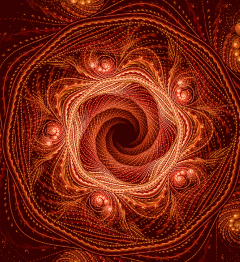
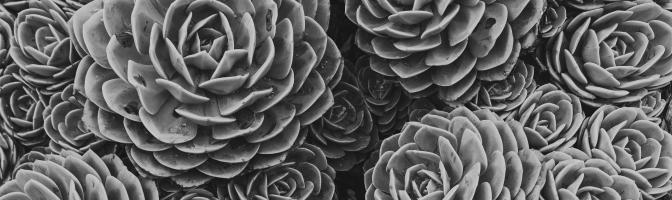

Фракталы и жизнь
В наши дни теория фракталов находит широкое применение в различных областях человеческой деятельности.
Помимо чисто научного объекта для исследований и уже упоминавшейся фрактальной живописи, фракталы используются в теории информации для сжатия графических данных (здесь в основном применяется свойство самоподобия фракталов — ведь чтобы запомнить небольшой фрагмент рисунка и преобразования, с помощью которых можно получить остальные части, требуется гораздо меньше памяти, чем для хранения всего файла).

Добавляя в формулы, задающие фрактал, случайные возмущения, можно получить стохастические фракталы, которые весьма правдоподобно передают некоторые реальные объекты — элементы рельефа, поверхность водоёмов, некоторые растения, что с успехом применяется в физике, географии и компьютерной графике для достижения большего сходства моделируемых предметов с настоящими.
В радиоэлектронике в последнее десятилетие начали выпускать антенны, имеющие фрактальную форму. Занимая мало места, они обеспечивают вполне качественный приём сигнала. Экономисты используют фракталы для описания кривых колебания курсов валют (это свойство было открыто Мандельбротом более 30 лет назад).
На этом мы завершим эту небольшую экскурсию в удивительный по красоте и разнообразию мир фракталов